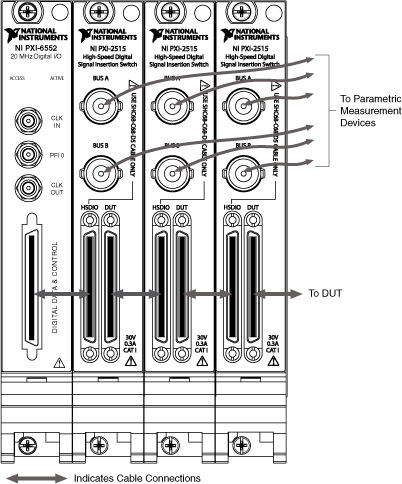

|
Note You must use the SCH68-C68-D5 cable. The pinouts are different from other SCH68 cables. |
You can expand the number of analog channels beyond two with additional NI PXI/PXIe-2515 (NI 2515) modules. Each additional NI 2515 module provides two additional analog channels. The number of digital lines does not change when you add analog channels.
Complete the following steps to expand the number of analog channels.
|
Note You must use the SCH68-C68-D5 cable. The pinouts are different from other SCH68 cables. |

|
Note HSDIO signal quality is incrementally reduced by each additional NI 2515 module. |